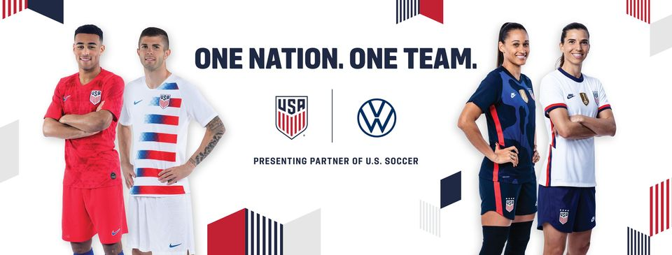

2020 Record
Mens : 2-0-1, Womens : 9-0-0
Womens Team
Vlatko Andovski took over the USWNT head coaching job in October 2019 after showing promise and success in the NWSL.Vlatko played professionaly from 2000-2006 and began coaching in 2010
Carli Llyod is known for her abilty to dominate the midfield. She has recorded 123 goals in 294 games, most famiously scoring a Hat Trick (3 Goals) in a 5-2 win in the 2015 World Cup Final against Japan.

Position: ST
169 Games
109 Goals

Position: FWD
168 Games
52 G 68 A

Position: MID
294 Games
123 G 58 A

Coach
October 2019 - Present
Alex Morgan is the current captain of the womens team and current top goal scorers with 169 games and 109 goals
Megan Rapino is the former captain of The team and is known for both her high level of play and outspoken personality about social justice issues.
Mens Team
Gregg Berhalter is the current USMNT coach, taking over after the team drawed to Trinidad & Tobago and failed to qualify for the 2018 World Cup.
Michael Bradley has been an integral part of the team since 2006 and has over 150 senior team caps.

Position: FWD
34 Games
14 G 9 A

Position: FWD
115 Games
42 Goals

Position: MID
151 Games
17 G 23 A

Coach
Dec. 2018 - Present
Christian Pulisic is the face of the Mens team. Widely described as their best player. He made his first cap in 2016 at age 18 and has put up 14 goals in 34 matches
Jozy Altidore has been the first choice striker for the USA since his first cap in 2007. He has played in 115 matches and scored 42 goals.